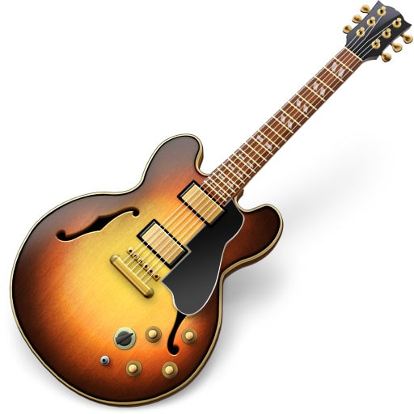
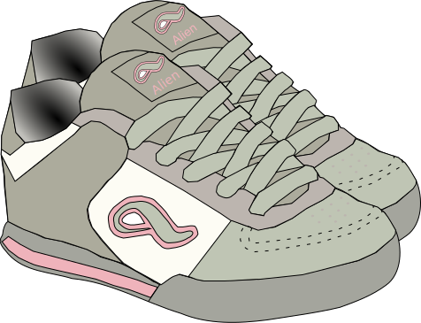
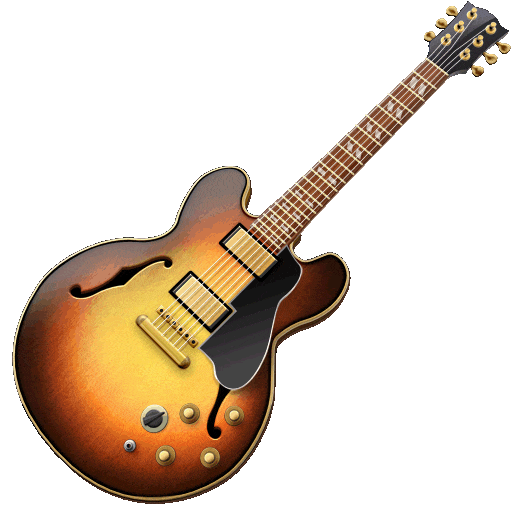
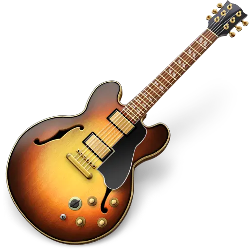
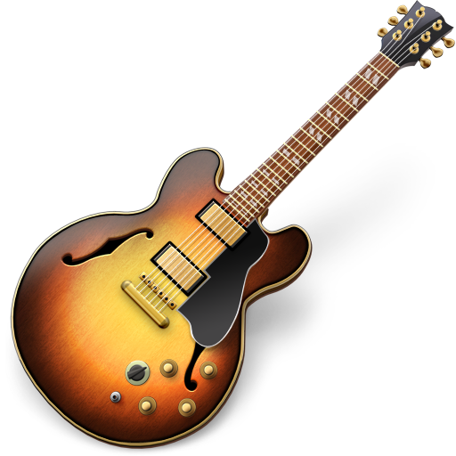

Изображения
По умолчанию изображения отрисовываются по такой ширине и высоте в пикселях как в исходном файле. Атрибутами width и height можно изменять исходный размер.
<img>
Как хак можно испольтзовать исходные изображения по ширине в 2 раза больше, чем оно отрисовываются в браузере, тогда будет поддержка ретины 2х. То есть, исходная картинка по ширине 1000px, а в html/css мы укахываем ей ширину 500px. Но есть недостаток, что на обычных экранах будет грузиться дольше.
Если нужна �гибкая настройка с srcset и sizes, то лучше использовать тэг <picture>.

<!-- Изображение с относительным источником c заданной шириной и высотой-->
<img src="../pict/kitty.png" width="250" height="100" alt="kitty.png" />
<!-- Изображение с абсолюиным источником -->
<img
src="https://zapovednik96.ru/upload/delight.webpconverter/puppy/images/kitten.png.webp?164509253131594"
alt="Картинка"
/>
<!-- Для ретиновых дисплеев будет грузиться файл pict800px.png -->
<img src="img/pict400px.png" width="400" srcset="img/pict800px.png 2x" />
<!-- Можно указывать сразу несколько изображений для двух- и трехслойной ретины -->
<img
src="img/pict400px.png"
width="400"
srcset="img/pict800px.png 2x, img/pict1200px.png 3x"
/>
<!-- С картой map для позиционирования ссылок -->
<img
src="https://zapovednik96.ru/upload/delight.webpconverter/puppy/images/kitten.png.webp?164509253131594"
alt="Картинка"
/>
<map name="infographic">
<area
shape="poly"
coords="130,147,200,107,254,219,130,228"
href="https://developer.mozilla.org/docs/Web/HTML"
target="_blank"
alt="HTML"
/>
<area
shape="poly"
coords="130,147,130,228,6,219,59,107"
href="https://developer.mozilla.org/docs/Web/CSS"
target="_blank"
alt="CSS"
/>
<area
shape="poly"
coords="130,147,200,107,130,4,59,107"
href="https://developer.mozilla.org/docs/Web/JavaScript"
target="_blank"
alt="JavaScript"
/>
</map>
<img
usemap="#infographic"
src="https://interactive-examples.mdn.mozilla.net/media/examples/mdn-info2.png"
alt="MDN infographic"
/>

<picture>
Более гибкая настройка тега <img>. Включает медиазапросы и поддержку ретиновых экранов. Вроде бы как сам тэг picture не стилизуется, стили принимает только <img>.
<picture>
<source
type="image/jpg"
media="(min-width: 0) and (max-width: 600px)"
srcset="images/mobile-375x210-1x.jpg 1x, images/mobile-750x420-2x.jpg 2x"
/>
<source
type="image/jpg"
media="(min-width: 601px) and (max-width: 960px)"
srcset="images/tablet-768x430-1x.jpg 1x, images/tablet-1536x860-2x.jpg 2x"
/>
<source
type="image/jpg"
media="(min-width: 961px)"
srcset="
images/desktop-1119x840-1x.jpg 1x,
images/desktop-2238x1680-2x.jpg 2x
"
/>
<img src="images/desktop-1119x840-1x.jpg" alt="plug-image" />
</picture>
Новый формат AVIF как image
<picture>
<source
type="image/avif"
srcset="images/cat@1x.avif 1x, images/cat@2x.avif 2x"
/>
<source
type="image/webp"
srcset="images/cat@1x.webp 1x, images/cat@2x.webp 2x"
/>
<img
class="picture"
width="500"
height="500"
src="images/cat@1x.jpeg"
srcset="images/cat@2x.jpeg 2x"
alt="Рыжий кот нюхает штанину."
/>
</picture>
Новый формат AVIF как background-image
.feature {
position: relative;
display: grid;
align-items: end;
/* Для Chrome и Safari */
background-image:
linear-gradient(to top, black, transparent 70%),
-webkit-image-set(
url('images/cat@2x.jpeg') 2x,
url('images/cat@1x.jpeg') 1x
);
/* Для Firefox */
background-image:
linear-gradient(to top, black, transparent 70%),
image-set(
url('images/cat@2x.avif') type('image/avif') 2x,
url('images/cat@1x.avif') type('image/avif') 1x,
url('images/cat@2x.webp') type('image/webp') 2x,
url('images/cat@1x.webp') type('image/webp') 1x,
url('images/cat@2x.jpeg') 2x,
url('images/cat@1x.jpeg') 1x
);
background-size: cover;
max-width: 500px;
aspect-ratio: 1 / 1;
}
<figure>
Если нужно выделить картинку и добавить ей заголовок. Используется редко. Можно всё сделать стилями.
<figure>
<img src="img/thumb1.jpg" alt="thumb1.jpg" />
<figcaption>Софийский собор</figcaption>
</figure>
Форматы изображений
-
JPEG
Самый распространнённый формат, подходящий для ФОТОГРАФИЙ, различных изображений, которым нужна полноцветность, но не нужна прозрачность. Можно иммитировать прозрачность делая цвет фона у JPEG такой же как в контейнере. 1991 г
- Небольшой вес
- Гибкость в настройке качества (обычно 60-90%)
- Огромное кол-во цветов (16 млн.)
- Не поддерживает прозрачность
- Сжатие с потерями (появляются артефакты)
- Не подходит для чертежей и схем, где нужна чёткость при маштабировании
- Всегда прямоугольник
-
PNG
Поддерживает прозрачность PNG-24 (или просто PNG). Самый лучший и современный формат изображений. Используется для всех полноцветных изображений, которым нужна прозрачность или полупрозрачность, отсутствие изображений, для спрайтов.
- Универсальный формат и для изображений, и для схем
- Сжатие без потерь (отсутствуют артефакты)
- Поддерживает прозрачность и полупрозрачность (255 градаций полупрозрачности)
- Огромное кол-во цветов (16 млн.)
- Современный формат
- Большой вес на хорошем качестве
-
SVG
Векторное изображение (Рисунки создаются математическими уравнениями, а не точками как в растровой графике).
- Маштабируемость без потери качества
- Поддерживает прозрачность и полупрозрачность
- Огромное кол-во цветов
- Может быть анимированным
- Текст в SVG воспринимается как текст
- Большой вес при большом содержании
- Сложность разработки и редактирования
-
GIF

Формат для анимаций и мелкой графики, не требующих высокого качества. 1986
- Небольшой вес
- Сжатие без потерь (без артефактов)
- Поддерживает прозрачность
- Поддерживает анимации
- 256 цветов
- Плохое качество изображений
- Не поддерживает полупрозрачность (прозрачность бинарная: пиксель либо прозрачный, либо нет)
- Сейчас в основном только для анимаций, просто для изображений уже никто не использует
-
WEBP
Разработан Google специально для web. Самый современный формат, небольшой вес. 2010 год
В среднем вес картинок сокращается на 25–35% при аналогичном качестве, если сравнивать с png.
- Поддержка анимации
- Поддержка уже хорошая, но слабое распространение
- Непопулярность, но перспективность в будущем
- Слабая поддержка программами для работы с графикой
-
PNG-8
Устарел. 1996 г. Напоминает GIF. Используется для мелкой неполноцветной графики как альтернатива GIF.
- Сжатие лучше, чем у GIF
- Подходит для схем, чертежей и текста
- Поддерживает прозрачность
- 256 цветов
- При прозрачности требует обводки
- Не поддерживает полупрозрачность
-
BMP
Большой вес. В вебе практически не используется, хотя браузеры поддерживают. Разработан Microsoft.
-
ICO
Формат хранения файлов значков в Microsoft Windows. Поддерживаемы размеры 16, 32 и 48 пикселей. Также используются значки с размером 24, 40, 60, 72, 92, 108, 128 пикселей. Раньше использовался для фавиконок.
-
Base64
TWFuIGlzIGRpc3Rpbmd1aXNoZWQsIG5vdCBvbmx5IGJ5IGhpcyByZWFzb24sIGJ1dCBieSB0
aGlzIHNpbmd1bGFyIHBhc3Npb24gZnJvbSBvdGhlciBhbmltYWxzLCB3aGljaCBpcyBhIGx1
c3Qgb2YgdGhlIG1pbmQsIHRoYXQgYnkgYSBwZXJzZXZlcmFuY2Ugb2YgZGVsaWdodCBpbiB0
aGUgY29udGludWVkIGFuZCBpbmRlZmF0aWdhYmxlIGdlbmVyYXRpb24gb2Yga25vd2xlZGdl
LCBleGNlZWRzIHRoZSBzaG9ydCB2ZWhlbWVuY2Ugb2YgYW55IGNhcm5hbCBwbGVhc3VyZS4=.some_background {
background-image: url('data:image/ТИП;base64,КОД');
}<img
src="data:image/png;base64, iVBORw0KGgoAAAANSUhEUgAAAAUA
AAAFCAYAAACNbyblAAAAHElEQVQI12P4//8/w38GIAXDIBKE0DHxgljNBAAO
9TXL0Y4OHwAAAABJRU5ErkJggg=="
alt="Red dot"
/>Cтандарт кодирования двоичных данных при помощи только 64 символов ASCII. Можно вставлять в html или css код, который будет конвертироваться в изображения. Хорошо подходит для мелкой графики (svg-иконок и небольших изображений). Меньше запросов к серверу.
Аттрибуты
<img
src="image.jpg"
alt="Описание изображения"
width="300"
height="200"
loading="lazy"
decoding="async"
crossorigin="anonymous"
referrerpolicy="no-referrer"
sizes="(max-width: 600px) 100vw, 50vw"
srcset="image-300w.jpg 300w, image-600w.jpg 600w"
title="Всплывающая подсказка"
longdesc="detailed-description.html"
ismap
usemap="#map1"
/>
<!-- Ленивая загрузка -->
<img src="image.jpg" alt="Описание" loading="lazy" />
<!-- Отключение ленивой загрузки для важных изображений -->
<img src="hero.jpg" alt="Главное изображение" loading="eager" />
<!-- Intersection Observer для кастомной ленивой загрузки -->
<img data-src="image.jpg" alt="Описание" class="lazy" />
<!-- Адаптивные изображения -->
<img
src="image-400w.jpg"
alt="Описание"
srcset="
image-200w.jpg 200w,
image-400w.jpg 400w,
image-800w.jpg 800w,
image-1200w.jpg 1200w
"
sizes="
(max-width: 600px) 100vw,
(max-width: 900px) 50vw,
33vw
"
/>
<!-- Плотность пикселей -->
<img
src="image.jpg"
alt="Описание"
srcset="image.jpg 1x, image@2x.jpg 2x, image@3x.jpg 3x"
/>